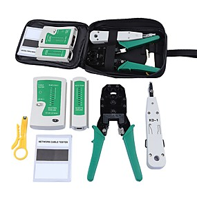

HERRAMIENTAS DE ADMINISTRACION DE RED
Para poder administrar las redes de la forma más eficiente posible un administrador de redes debe contar con las mejores herramientas. Además podrá sacar el máximo rendimiento posible a sus redes. A continuación listamos las herramientas de red más utilizadas:1?
NetDot (unix/Linux)
NMap (Linux/Unix/Windows)
Ntop (Unix/Linux/Windows)
Wireshark (Anteriormente llamado Ethereal)(Unix/Linux/Windows)
TCPDump (Unix/Linux/Windows)
Kismet (Unix/Linux)
FreeRadius (Unix/Linux)
OpenLdap (Unix/Linux)
Apache Directory (Unix/Linux/Windows)
DSniff(Unix/Linux)
OpenSSH (Unix/Linux/Windows)
Putty (Windows/Linux)
Filezilla (Unix/Linux/Windows)
DansGuardian (Unix /Linux)
FreeNas (Linux)
Pfsense (Linux)
Shorewall (Linux)
(01-06-2019). Wikipedia. www.wikipedia.com. https://es.wikipedia.org/wiki/Administrador_de_red (URL).